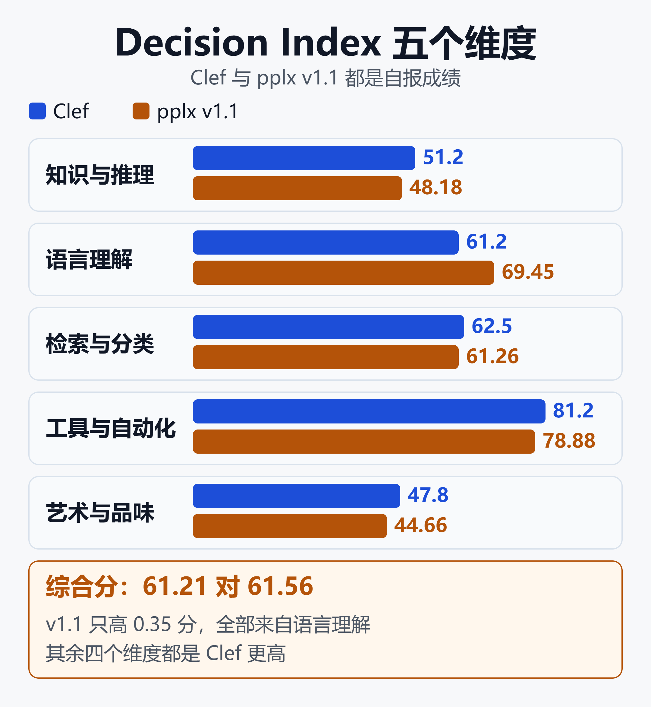
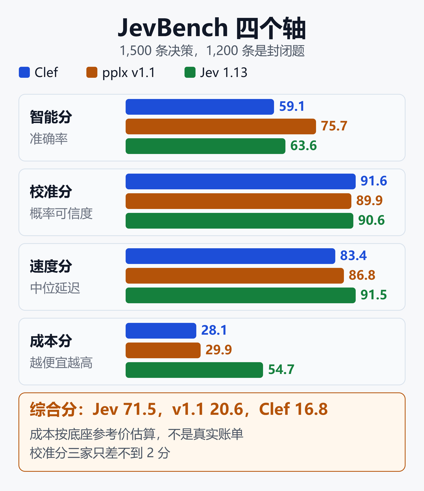
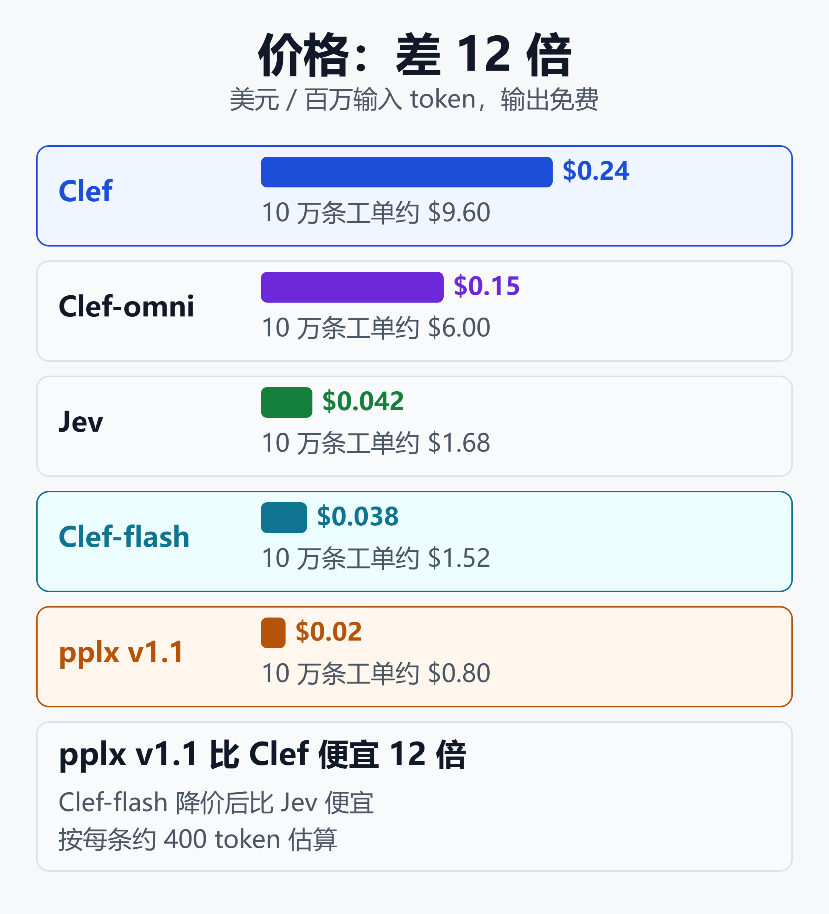
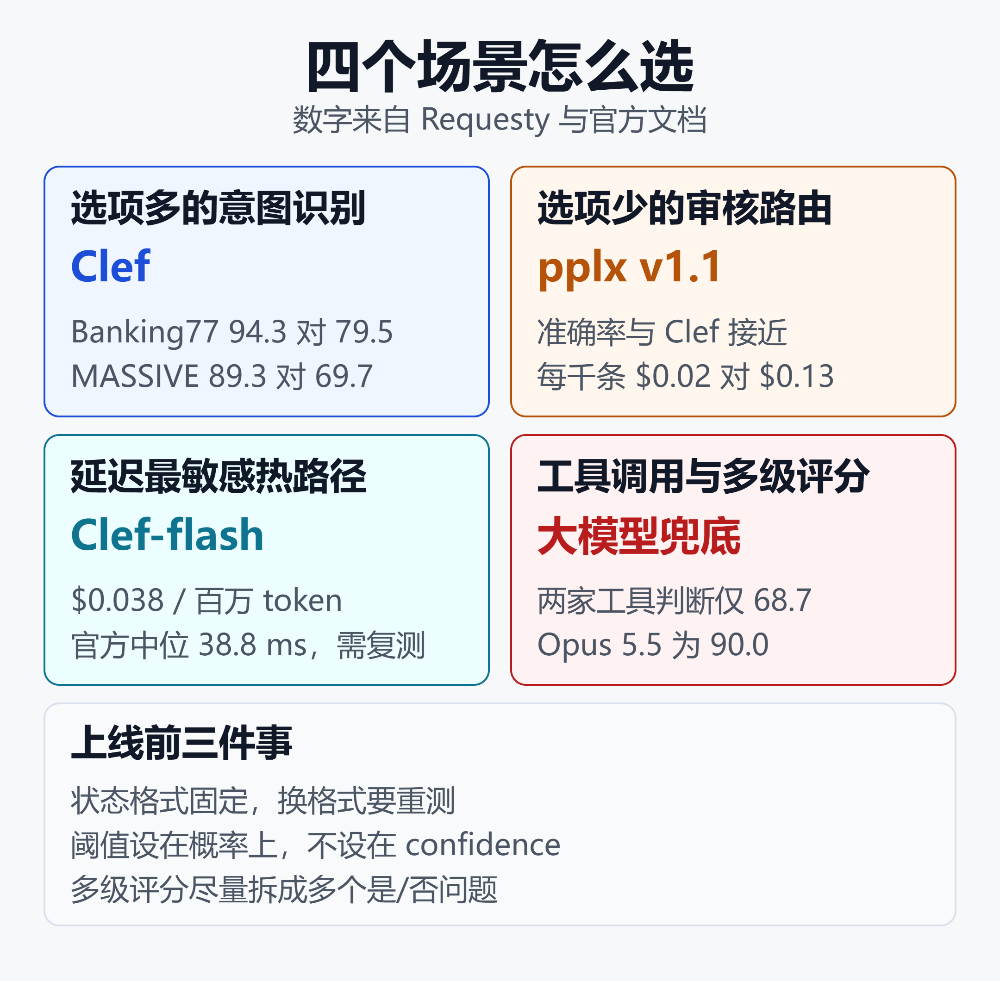

Clef、Perplexity decider、Jev 怎么选：两个开源决策模型同日发布，价格差 12 倍
2026 年 10 月 1 日，Cloudflare 和 Perplexity 在同一天各放出一个 27B 的开源决策模型：Clef 和 pplx-decider。两个都是 Apache 2.0 协议，接口都兼容 TypeSafe 的 Jev，距离 Jev 9 月 15 日发布不到三周。
价格差得很远。每百万输入 token，Clef 是 0.24 美元，Perplexity 的 v1.1 是 0.02 美元，Jev 是 0.042 美元。
榜单更乱。Cloudflare 自己搭的榜单上，Clef 综合分第一。独立的 JevBench 上，Clef 的综合分只排到第 78，而 Perplexity v1.1 的智能分是 140 个系统里最高的。
两个榜单没有谁错，问的问题不一样。这篇文章先把两个模型讲清楚，再拆开两个榜单的算法，最后对照第三方实测给出选型建议。
一、先交代品类
决策模型不写文字。你给它一段状态和一组带类型的问题，它一次前向就返回每个选项的概率。Jev 把这个品类做了出来，原理和背景在决策模型选型：Jev 闭源收费，Laya 开源免费，谁的概率能信？里讲过，这里不重复。
三种问题类型，三家完全一致：
noul：是/否，返回"是"的概率。choice：从你给的选项里选一个，返回每个选项的概率。score：按有序评分档打分，返回概率加权的期望分。
接口一致，换模型的成本就很低，也就可以在自己的数据上并排跑三家。本文所有建议都建立在这一点上。
同一天 AWS 还发布了 Strands Decider 2B。这条来自AI Weekly 的报道转述，本文没有单独评测它。
二、Clef：Cloudflare 的第一批自训模型
Clef 是 Cloudflare Workers AI 团队训练的第一批模型。官方的说法是周五晚上立项，周末训练，下周四发布。
10 月 1 日放出了 Clef 和 Clef-flash，10 月 9 日又加了 Clef-omni：
- Clef：基于 Qwen3.8-27B，托管版 64K 上下文，带视觉编码器。
- Clef-flash：基于 Qwen3.5-9B，主打低延迟。
- Clef-omni：基于 Qwen3-Omni-30B-A3B（MoE），能直接读音频和视频。
它怎么做出来的
骨干模型是冻结的，Cloudflare 在上面加了一个联合 schema 头，再配 rank-256 的 LoRA 适配器。推理时只做一次预填充，然后对所有问题的所有选项并行打分，没有逐个 token 生成的过程。
训练目标是带标签平滑的交叉熵，加上 Brier 损失来拉准概率校准。之后还有一个强化学习阶段，名字叫 RLCD，和 TypeSafe 为 Jev 起的方法名相同。给有序评分题的相邻档位部分得分，也是这个阶段的设计。
训练数据是 Cloudflare 内部的合成数据，会打乱字段顺序、提示词和 schema 结构。这些细节出自Cloudflare 的发布博客，没有第三方复核过。
官方成绩：分类和工具选择赢，推理题输
下表来自Hugging Face 上的 Clef 模型卡，是 Cloudflare 自己跑的结果：
| 基准 | Clef | Jev |
|---|---|---|
| BFCL 工具调用 | 98.5 | 95.8 |
| BANKING77 意图 | 94.2 | 79.7 |
| CLINC150 意图 | 97.4 | 89.3 |
| GPQA Diamond | 48.0 | 78.3 |
| MMLU-Pro | 65.9 | 82.7 |
| BBH | 73.7 | 92.9 |
规律很清楚：选项明确的分类和工具选择，Clef 领先；需要多步推理的题，Jev 领先很多。
TypeSafe 自己的四个工作流评测里，Clef 赢三个：发票处理 64.7 对 61.8，客服 76.3 对 76.0，安全事件 62.9 对 61.7。分差只有 0.3 到 2.9 分。Agent trace 可观测性一项 Jev 赢，71.6 对 68.5。
Cloudflare 内部的用法也值得一看。威胁情报团队用 Clef 配合 Browser Run 给网站分类，2.2 秒完成抓取、渲染和分类；同一流程用 gpt-oss-120b 要 4.7 秒，而且只给出两个分类。文档仓库用它自动识别并关闭垃圾 issue，数据防泄漏团队用它扫描身份证件之类的个人信息。
三、Perplexity decider：从 v1 到 v1.1
Perplexity 在 10 月 1 日同时开放了 Decisions API 和 v1 权重，几天后发了 v1.1。两个版本都基于 Qwen3.8-27B。
结构上，它把语言模型头换成一个 255 行的"答案码"读出头，直接对每个选项出概率，再套一个校准温度。v1 是在决策数据上做了一个 epoch 的监督微调。
v1.1 用的是同一个骨干，主要改了两处：解除全注意力层的因果掩码，并加入更多训练数据，其中包括 tasksource。模型卡说 Decision Index 分数从 56.4 提高到 61.56，比 Jev 的 57.9 高 3.5 分以上。
v1 的官方成绩
v1 的模型卡给了一个 11 个基准、共 7,210 条样本的面板，是 Perplexity 用自己的 API 测的：v1 总体 85.71%，Jev 84.51%，Qwen3.8-27B 原始模型 74.76%。
v1 赢在 RAGTruth（88.80% 对 77.27%）、FinancialPhraseBank、TabFact 和 Circa。Jev 仍然赢 WinoGrande（90.70% 对 83.30%）和 BBH（94.27% 对 82.80%）。AI Weekly 统计 Jev 在 11 项里赢 4 项。这些数字同样是自报，文档里没有给出基准表。
API 的规格
Perplexity 的 Decisions API 文档给出的限制，比 Clef 宽：
- 每次请求最多 128 个问题（Clef 是 64）。
choice最多 255 个选项，score最多 10 档。- 输入上限 262,144 token。
- 图片只收 base64 数据，不收网址。
- 每个组织每秒 10 次请求。
价格是每百万输入 token 0.02 美元，输出免费。v1 当时是 0.04 美元，v1.1 降了一半。
四、两个榜单，两种问法
Cloudflare 榜单：问谁分类更准
Cloudflare 榜单收录 73 个模型，覆盖 38 个基准，分五个维度加权：
- 知识与推理 25.85%，语言理解 25.85%。
- 检索与分类 20.02%，工具与自动化 18.28%。
- 艺术与人类品味 10%。
分数做了随机水平校正，0 分等于瞎猜，100 分等于满分。榜单数据搬自 Hugging Face 上社区维护的 Jev Decision Index，快照日期是 9 月 28 日，版本 0.2.1。Clef 综合分 61.21 排第一，Jev 57.91 排第二，Clef-flash 57.07 排第五。
把 v1.1 的模型卡数字和 Clef 并排：
| 维度 | Clef | v1.1 |
|---|---|---|
| 知识与推理 | 51.2 | 48.18 |
| 语言理解 | 61.2 | 69.45 |
| 检索与分类 | 62.5 | 61.26 |
| 工具与自动化 | 81.2 | 78.88 |
| 艺术与品味 | 47.8 | 44.66 |
| 综合 | 61.21 | 61.56 |

v1.1 的综合分只高 0.35，而五个维度里 Clef 赢了四个。我按榜单公布的权重算过，语言理解一项领先 8.25 分，贡献约 2.13 分，其余四项合计落后约 1.76 分，净差约 0.37，和 0.35 吻合。也就是说，这点领先全部来自语言理解。
读这张榜要留意四件事：
- Clef 的成绩是自报的，上游维护者没有复现。
- Clef 有两个基准没跑（HLE 和 iSarcasmEval），按 0 分计入总分。
- Clef 的延迟是在 Cloudflare 自己的服务栈上测的，和其他模型的 RTX PRO 6000 不能直接比。
- v1.1 的数字来自它自己的模型卡，Perplexity 的社区帖称对应 Decision Index 0.3，和这张榜的 0.2.1 是否同一口径，我没能核实。
JevBench：问预算和延迟下谁值得用
JevBench由 Benchmark Heaven 维护，这是一个人做的业余项目，页面标着 BETA，也对想优先评测的开发者收费。它与 TypeSafe 无关。
它每次测 1,500 条决策，其中 1,200 条是不公开的封闭题，300 条是公开题。失败和拒答都留在分母里。四个轴各 0 到 100 分：
- 智能分：随机水平校正后的准确率。
- 校准分：概率分布准不准。
- 速度分：中位延迟。
- 成本分：每千次决策的美元成本。
能力分是智能分和校准分的平均。综合分是四个轴的调和平均，速度或成本低于 50 时还要乘以平方惩罚。
Clef 和 v1.1 都在 v1.6.1 的历史目录里。Jev 1.13.0 的数字作为参照写在表后：
| 指标 | Clef | v1.1 |
|---|---|---|
| 智能分 | 59.1 | 75.7 |
| 校准分 | 91.6 | 89.9 |
| 速度分 | 83.4 | 86.8 |
| 成本分 | 28.1 | 29.9 |
| 能力分 | 75.3 | 82.8 |
| 综合分 | 16.8 | 20.6 |
Jev 1.13.0 的对应数字依次是 63.6、90.6、91.5、54.7、77.1 和 71.5，综合分排第 5。

这张表有三个读法。第一，v1.1 的智能分比 Clef 高 16.6 分，是 140 个有智能分的系统里最高的。第二，Clef 的校准分在 140 个系统里排第 6，三个模型的校准分只差不到 2 分，概率的可信度差别不大。第三，综合分被成本轴拉低，v1.1 排第 66，Clef 排第 78。
但这里的成本不是真实账单。JevBench 对这两个模型都按 Qwen3.8-27B 的市场参考价估算，以 v1.1 为例是每百万输入 0.42 美元、输出 3.0 美元，再乘以实测 token 数。估出来分别是每千次决策 0.217 美元和 0.249 美元，都超过了"Jev 级"的上限 0.065 美元，所以两者都不进能力榜头条。
延迟也做了调整，评测方按"乘 2 加 0.15 秒"处理。我的判断是：如果你买的是 API 而不是自己养 GPU，综合分的参考价值有限，更值得看的是智能分和校准分。
补充一点：Clef-flash 在同一张榜上能力分 63.8，成本估算 0.059 美元，在 Jev 级范围内，综合分排第 44。后来发布的 v1.6.3 只有 4 个新微调模型，Clef 不在其中，版本之间的分数也不能直接比。
第三方实测：Requesty 的 22,000 次决策
路由服务商 Requesty 在 10 月 5 日跑了约 22,000 次决策。注意它测的是 Perplexity 的 v1，不是 v1.1。Requesty 也在卖这几个模型的路由，立场并不完全中立。
| 任务 | Clef | pplx v1 |
|---|---|---|
| Banking77 意图 | 94.3% | 79.5% |
| MASSIVE 意图 | 89.3% | 69.7% |
| 人工标注任务均分 | 83.2% | 81.8% |
| 工具调用判断 | 68.7% | 68.7% |
| 三级复杂度 | 51.9% | 56.1% |
细粒度意图分类上，Clef 拉开了很大差距。选项少的审核和路由任务上，两者很接近。最后一行是和 Claude Opus 5.5 打的标签比较，衡量的是"像不像 Opus"，不是对真实答案的准确率。
另外几个发现：
- 校准误差 ECE：Clef 在五个数据集里的四个是 0.017 到 0.040，Perplexity 是 0.031 到 0.096。
- 每千条的实际账单：Clef 0.13 美元，Perplexity 0.02 美元。
- 两个决策模型在 2,000 条里都给出了可用答案。Azure 上的 GPT 系列在 toxic-chat 提示上有 33% 到 36% 没答出来，被内容过滤或拒答了。
五、钱和速度
价格以各家官方文档为准。按每条工单约 400 token、共 10 万条估算，也就是 4,000 万 token，我用官方单价算了一遍：
| 模型 | 每百万输入 | 10 万条工单 |
|---|---|---|
| Clef | $0.24 | $9.60 |
| Clef-omni | $0.15 | $6.00 |
| Jev | $0.042 | $1.68 |
| Clef-flash | $0.038 | $1.52 |
| Perplexity v1.1 | $0.02 | $0.80 |

Clef-flash 在 10 月 9 日从 0.09 美元降到 0.038 美元，已经比 Jev 便宜，代价是托管版上下文从 64K 砍到 24K。Cloudflare 说只有 0.24% 的请求超过 24K。Hugging Face 上的权重不变，仍按 256K 训练。
Perplexity 按返回里的 usage.input_tokens 计费。多问题请求实际算多少 token，要以返回值为准，上线前自己测一次。
延迟的说法就乱得多：
- Cloudflare 官方：Clef 中位 209 ms，Clef-flash 38.8 ms。服务端优化后，约 800 token 的输入 Clef 中位从 262 ms 降到 152 ms。
- Perplexity 文档：几百 token 的请求不到 2 秒，约 9 万 token 约 5 秒，接近上限约 23 秒。
- Requesty 经路由器测：Perplexity 约 385 ms，Cloudflare 上的 Clef 626 到 780 ms，Sference 上的 Clef 407 到 566 ms。同一份权重换个服务商，能差 200 ms。
- JevBench 做过调整后：Jev 0.24 秒，v1.1 0.39 秒，Clef 0.58 秒。
还有一个对不上的数字。rmax-ai 的 jev-vs-clef 压力测试用 159 次调用测托管版 Clef，两轮（10 月 3 日和 6 日）的 p50 都是约 18.6 秒。作者没有找到原因，另一次探测曾观察到不到一秒。
Flavio Copes 在发布当天测 Clef-flash，通过 REST 的中位延迟约 200 ms，但图像请求要 13 到 30 秒。结论只能是：延迟随时间、地区和服务商变化，上线前要在目标地区自己测。
六、自托管与迁移
两个模型的权重都是 Apache 2.0，单卡 27B 能跑。
Clef 的模型卡用 transformers 加载，Cloudflare 在单张 H200 上测过。Cloudflare 也向 SGLang 提交了支持，官方说会随 0.5.22 发布。
Perplexity v1 的权重约 49 到 52 GB（BF16）。SGLang 手册里 GB300 单卡的数据是：382 token 的短问题单并发 51 ms，满载约每秒 71 个请求。手册给的启动命令是：
sglang serve \
--model-path perplexity-ai/pplx-decider-v1-27b \
--host 0.0.0.0 --port 30000
这是 v1 的命令，我没能打开 v1.1 的手册页。v1.1 的模型卡要求用它自带的推理代码来保持非因果注意力，换成通用的 Qwen3_5ForConditionalGeneration 服务时，要另做导出并保持同样的注意力行为。卡片里还写着需要"authenticated access to this private repository"，而页面本身是公开的，部署前请自行确认仓库的访问权限。
SGLang 手册还说明了两点：
- FP8 量化能多出约 20% 吞吐，但概率平均偏移 0.010，最大偏移 0.20，约 0.9% 的答案会换成别的选项。只看最高选项时才适合用。
- 对 v1，每个问题单独预填充一次，请求成本约等于问题数乘以状态长度。Clef 的联合头是一次前向给所有问题打分，问题很多时可能更占便宜，但我没有实测。
换模型时请求体的形状几乎不变：
{
"model": "pplx-decider-v1.1-27b",
"state": "Checkout fails for every customer.",
"questions": {
"urgent": {
"type": "noul",
"instructions": "Is this urgent?"
}
}
}
要改的地方有这几处：
- 地址：Cloudflare 走
/ai/run/@cf/cloudflare/clef，Perplexity 走https://api.perplexity.ai/v1/decisions。 - 密钥：各自平台的 Bearer 令牌。
model字段：Cloudflare 只认clef或clef-flash。- 响应外层：Cloudflare 的 REST 接口多包一层
result。 - 自托管的 SGLang 走
/v1/systemone，手册说/v1/decisions会拒绝开源权重。
七、怎么选
四个场景

选项很多的意图识别，选 Clef。Banking77 上 94.3% 对 79.5%，MASSIVE 上 89.3% 对 69.7%，差距大到不用纠结。
选项少的审核和路由，选 Perplexity。两者准确率接近，Perplexity 每千条 0.02 美元，Clef 0.13 美元，而且 Perplexity 更快。
延迟最敏感的热路径，选 Clef-flash。每百万 0.038 美元，Cloudflare 自报中位 38.8 ms，这个数字要自己复测。
需要读工具定义或判断多级难度的，保留大模型。工具调用判断两家都只有 68.7%，Opus 5.5 是 90.0%。三级复杂度和 Opus 的一致率只有 52% 到 56%。
用概率做兜底
决策模型的概率是校准过的，可以按置信度分流。Requesty 在 1,600 条人工标注决策上的曲线是：
- 保留最自信的 80%：Clef 准确率 82%，Perplexity 80%。
- 保留最自信的 50%：Clef 86%，Perplexity 88%。
剩下的低置信度请求转人工，或者交给大模型。这样大模型只处理一半流量，整体成本仍然低很多。
三个共同的坑
第一，状态格式敏感。rmax-ai 的测试里，同一个退款请求在 Clef 上问"是否紧急"，写成一段文字得 0.90，写成扁平 JSON 得 0.86，写成嵌套 JSON 只有 0.09 到 0.10。choice 和 score 的答案则比较稳定。每条流水线里固定状态格式，换格式就要重新验证。
第二，confidence 字段不可移植。Requesty 发现 Sference 返回最高概率，Cloudflare 返回的数值更低，Perplexity 又是另一个口径。Perplexity 文档也明确说它不是最高概率，而是模型自己的把握度。阈值请设在概率上。
第三，多级评分偏弱。Requesty 的两个测试里，有序评分比是/否问题低约 10 分。能拆成一组 noul 问题的，就别用多级 score。
最后一步是自己的数据。找 20 条你知道答案的输入，三家各跑一遍，重点看答案不一致和置信度低的那几条，先改问题的写法，再怪模型。接口兼容，这件事成本很低。
决策模型的输出只有一个概率，出错时没有文字可读，追踪比生成式场景更重要。做法可以接着看从零搭建 LLM 安全护栏：开源工具选型 + 生产架构实战和Langfuse实战：给AI Agent装上黑匣子——开源LLM可观测性平台完全指南。
小结
这一轮的结论比榜单名次朴素。
Clef 的强项是选项多的分类和工具选择，校准也好，但价格最贵，延迟的说法最不统一。Perplexity 的 v1.1 在 JevBench 上智能分最高，价格最低；Requesty 测的 v1 在选项少的任务上和 Clef 打平，细粒度意图上输得明显。Jev 在推理类基准上仍然领先，也是三家里唯一闭源的。
两个榜单要一起读。Cloudflare 榜单自报、缺项按 0 分算，适合看大趋势。JevBench 用封闭题，更能防过拟合，但成本是估算，综合分对 API 用户的参考价值有限。
选型的落点不在名次，而在三件事：选项有多少个，延迟和价格的预算，以及你能不能用自己的 20 条标注数据验证一遍。
免责声明
本文数据来自公开来源，包括厂商自述、模型卡、第三方独立评测和个人项目的测试，口径、样本量和测量时间各不相同，不可直接互相比较。
Clef 在 Cloudflare 榜单上的成绩为自报，Perplexity 的模型卡数字也是自报。JevBench 的成本和延迟包含评测方的估算与调整，不等同于各家 API 的真实账单和延迟。
价格、上下文和限制为 2026 年 10 月 10 日前后的公开状态，早期产品变化很快，选型前请以官方文档和自有数据的实测为准。本文不构成任何采购建议。
参考来源
- Cloudflare 博客 —— Introducing Clef: our open-source decision models, and new RL fine-tuning platform
- Cloudflare 博客 —— Introducing Clef-omni with full multimodality, plus a faster Clef and a cheaper Clef-flash
- Cloudflare Changelog —— Introducing Clef: Cloudflare's first open-source decision models, now on Workers AI
- Hugging Face —— Cloudflare/clef 模型卡
- Cloudflare Decision Model Leaderboard 榜单页
- Hugging Face Space —— multimodalart/jev-decision-index
- Hugging Face —— perplexity-ai/pplx-decider-v1.1-27b 模型卡
- Hugging Face —— perplexity-ai/pplx-decider-v1-27b 模型卡
- Perplexity 文档 —— Decisions API
- Perplexity 社区 —— pplx-decider-v1.1-27b 发布帖
- SGLang 文档 —— PPLX-Decider-v1-27B 部署与基准
- AI Weekly —— Perplexity Open-Sources 27B Decider, Edges Jev on 11-Test Panel
- Benchmark Heaven —— JevBench v1.6.3
- Benchmark Heaven —— JevBench 方法说明
- Requesty —— We benchmarked the decision models
- GitHub —— rmax-ai/jev-vs-clef
- Flavio Copes —— A deep dive into Clef, Cloudflare's decision model
- TypeSafe —— Introducing System One Models & Jev
相关阅读
- 决策模型选型：Jev 闭源收费，Laya 开源免费，谁的概率能信？
- 大模型评测全指南：从 MMLU、SWE-bench 到 Arena，读懂指标、排名与真实能力
- 从零搭建 LLM 安全护栏：开源工具选型 + 生产架构实战
- 端云协同部署实战2026：四种路由模式、七类场景与选型清单
- AI Agent治理与可观测性：企业落地的隐藏成本
- 大模型时代的专用小模型图鉴：从对抗到共生
推荐搭配装备
善其事，利其器。以下硬件能最大化你的AI体验👇
🔗 通过以上链接购买可支持本站持续运营 🙏